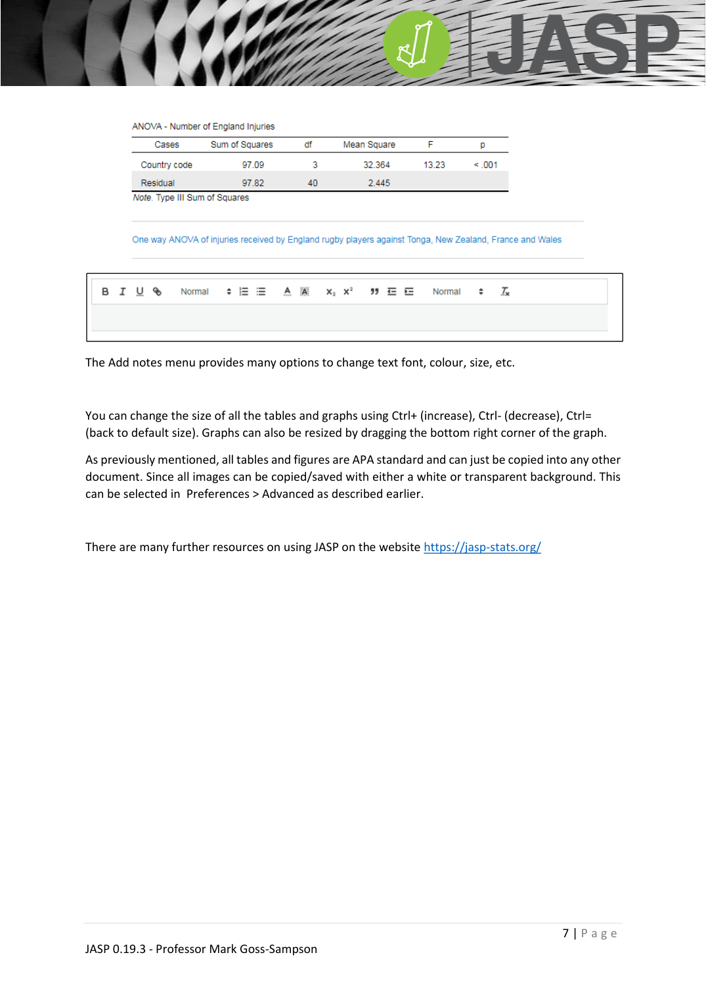

JASP_data_editing
JASP 資料編輯
直接在 JASP 編輯
點工具列的編輯圖示開啟內建編輯器，可：
- 直接輸入新資料
- 修改既有儲存格
- 同步外部資料（外部 Excel 改完 → JASP 點 Sync）

雙擊儲存格 → 開啟外部試算表
在 spreadsheet view 雙擊任一儲存格，JASP 會用系統預設試算表編輯器（預設 Excel；可在 Preferences > Data 改）開啟原始檔。
工作流程：
- 雙擊儲存格 → Excel 開啟資料
- 在 Excel 改完並儲存（檔名不能改）
- 回到 JASP，Ctrl-Y 同步 → 所有分析自動重跑
注意
- 直接編輯會修改原始檔；建議先備份
- 編輯時若改了欄位名稱，舊有分析中對應變數會失效
延伸
- 變數轉換（log、差異欄等）：JASP_data_transformation